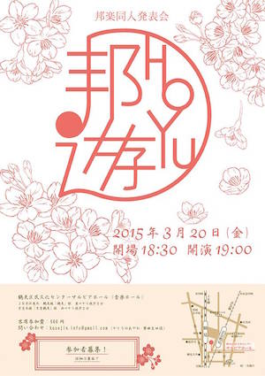
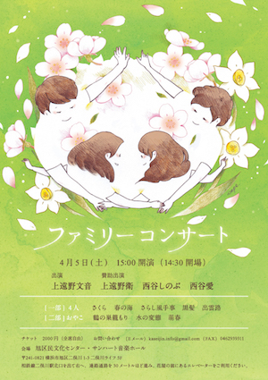
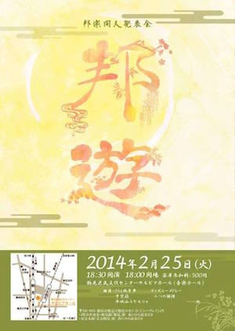

歩く総合生だった過去があったような。 高校卒業のち３年間の半ひきこもり生活を経て2010年東京芸術大学進音楽学部邦楽科箏曲生田流専攻に入学、2014年同大学大学院へ進学。
2歳より邦楽器奏者である両親のもと箏を始めたが、伝統邦楽への無関心と周囲の期待への反抗から高校進学に伴い楽器を離れる。 20歳で改めて箏の道を志し、古典箏曲において繊細な感情・情景描写が行われていることに気付き、その背景に暮らしていた「日本人」に魅せられる。 自身の経験から、現代日本人と伝統邦楽の繋がりに関心を持ち、「創客」を意識した演奏企画・指導、邦楽器愛好者の成果発表の場となることを目指した発表会の企画・運営を行う。 二次元になりたい。
演奏・指導など是非ご相談ください。
作品



略歴
1997
- 第32回 宮城会箏曲コンクール児童部 一位
2003
- 宮城道雄記念コンクール一般部 一位（最年少）
2006
- フランス大使館などの後援による日仏芸術文化協会派遣「日仏こども音楽隊フランスコンサート」においてソリストを務める
2007
- 神奈川県立神奈川総合高校 卒業
2013
- 「共二弾々会」
2014
- 「邦楽同人発表会～邦遊」鶴見区民文化センター サルビアホール
- 皇居内桃華堂において御前演奏を務める
- 『ファミリーコンサート』サンハート音楽ホール（二俣川）
2015
- 邦楽同人発表会「邦遊」鶴見区民文化センター サルビアホール